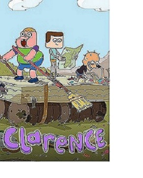

??????
El increile mundo de Gumbal
 La serie gira en torno a la vida de un gato azul llamado Gumball Watterson y sus frecuentes travesuras en la ficticia ciudad estadounidense de Elmore, acompañado por su hermano adoptivo y su mejor amigo, Darwin.
La serie gira en torno a la vida de un gato azul llamado Gumball Watterson y sus frecuentes travesuras en la ficticia ciudad estadounidense de Elmore, acompañado por su hermano adoptivo y su mejor amigo, Darwin.
Otros miembros de la familia Watterson son: una conejita rosada e intelectual hermana menor, Anaís; un conejo holgazán, como su padre, Richard; y su madre Nicole, una gata, quienes a menudo se ven involucrados en las aventuras de Gumball.
Si te gustan las aventuras,la comedia y los
animales, el increible mundo de gumbal
es para ti, con nuevas aventuras todos los
dias y buenos giros de trama, es una serie perfecta para ver en familia.
Articulos relacionados
 |
 |
 |
| Clarence |
Un show mas |
Peppa pig |